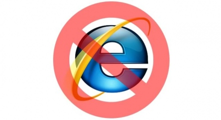

Use of Internet Explorer
Internet Explorer ignores all internet standards regarding page styling, and thus I can't be asked to adjust my pages over and over again to comply with this crappy browser.
Everything on this website is designed and tested on Google Chrome, and will most likely work in all browsers but Internet Explorer.
If you want to save developers like me a ton of work, stop using Internet Explorer now.
Use a real browser like Google Chrome or Firefox if you want to view any webpages as they are intended to be viewed.
If you are not convinced yet, just google it.
Also, stay away from Bing, it's evil.
Gr.Villermen
